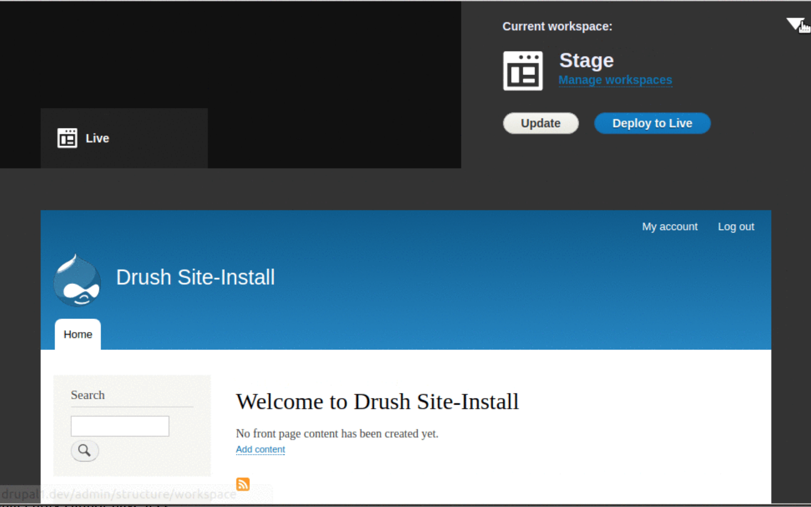

El futur del Drupal
Cristina Chumillas
Rodrigo Aguilera
Agenda
- Qui decideix el futur del Drupal: iniciatives
- Canvis que afecten a tot el projecte
- Canvis per a:
- Desenvolupadors
- Mantenidors de sistemes Drupal
- Usuaris
- Membres de la comunitat
- El futur ja es aquí
- Posició del Drupal al mercat
El rumb del Drupal
Iniciatives estratègiques + lideratge del projecte
Canvis globals üåà
Admin UI and JavaScript Modernisation
Documentació
Front end desacoplat

Canvis per a desenvolupadors ü뮂Äçüíªüë©‚Äçüíº
API-first
Composer
Gestió de la configuració (CMI 2.0)
Gitlab a drupal.org
PHP 7
Canvis per a DevOps üõ†
- Extended security support
UX - Experi√®ncia d'usuari ü¶Ñ
Media
Actualitzacions automàtiques
Layout builder

Out-of-the-box
Workflow

Canvis a la comunitat
- Governança
- Drupal Association (aka DA) i la comunitat
- Drupalcon a Europa
- Focus en Drupalcamps locals
Drupal 9
Perquè?
Symfony 3 - final de cicle de vida al 2021
Desenvolupament
Drupal 9 s'està construint amb el mateix Drupal 8
Actualitzacions
- Contribuïdors: menys esforç perquè es treurà funcionalitat obsoleta
- Autors de mòduls: ja tindrem la tecnologia necessària, així que podràn començar a desenvolupar abans
- Responsables dels lloc web: mateixa tecnologia, finestra de 12-18 mesos per a actualitzar serà suficient
Què hem aconseguit fins ara?
Moltes iniciatives completades
CMI 1.0, HTML5, Mobile, Multilingual, Outside-in, SCOTCH (layouts), Twig, views dins de core, Web services, etc.
Futur posicionament del Drupal al mercat tecnològic
A quins projectes volem donar solució?
Sostenibilitat
Com fer que el Drupal continui essent rellevant al 2025?
Contribu√Ødors üí™
Com aconseguim que no es cremin i continïn contribuint?
Finançament ⚖️
Qui paga el cost del desenvolupament?
Evolució
tecnològica
El Drupal forma part del futur
Per a altres comunitats drupal és un exemple de col·laboració global.
El projecte té moltes ambicions mes enllà de mantenir la seva cuota de mercat com a CMS.